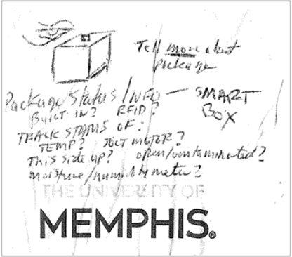
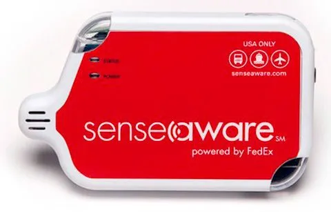
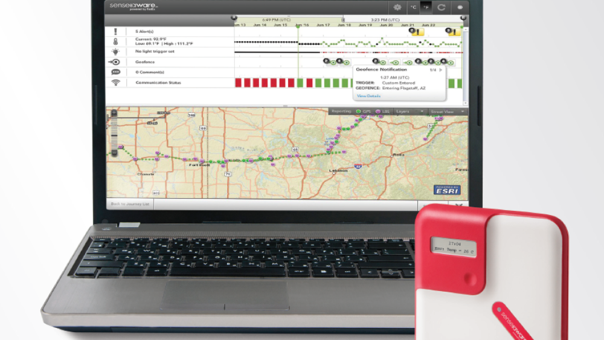

Case Study · SenseAware
From Napkin to Global Platform
How one sketch became FedEx's first integrated remote-sensor IoT platform, and later helped carry COVID vaccines.

01 · Sketch
The napkin
The original concept for sensor-based shipment tracking.

02 · Hardware
The sensor device
Temperature, light, location, and barometric pressure in one package.

03 · Platform
The SaaS platform
Real-time sensor data for every critical shipment.

04 · Scale
Global deployment
Vaccines, pharmaceuticals, and high-value logistics worldwide.
Industry First
Zero-to-One
Co-founded SenseAware inside FedEx: a global SaaS IoT platform for real-time shipment tracking with live sensor data. Named a Top 10 Internet of Things product of 2009, years before IoT became a mainstream category.
Global Scale IoT
COVID Vaccine Delivery
ReadWriteWeb: Top 10 IoT Products of 2009
InformationWeek 500: 20 Great Ideas to Steal (2010)
Postscapes: Best Enterprise IoT Implementation (2011 & 2012)
World Mail Awards: Innovation & Security (2012)
Cool Chain Logistics Europe: Supply Chain Integrity Innovator (2013)
SHD Logistics: Innovation Award, Highly Commended (2014)